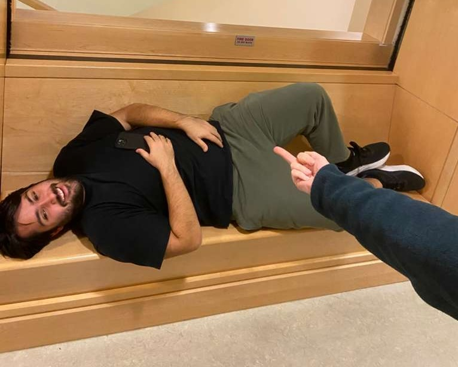

My teaching philosophy stems, first and foremost, from the principle that students ought only learn from you at your most capable and alert. Crucial to achieving that end is sleeping often, perhaps even when teaching. Below, you can see me putting this ethos into practice.
